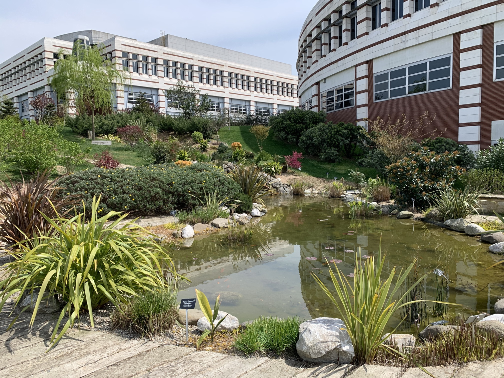

Four chapters: meeting the person, building a university, connecting with nature and remembering through a garden. The same story is told at three levels of detail.
MEDIUM NARRATION
One person, one university, one garden
CHAPTER 1 · WHO WAS TOSUN TERZİOĞLU?
The person behind the name
The story of this garden begins with the person it remembers. Tosun Terzioğlu was born in Istanbul in 1942. He studied mathematics in Newcastle and completed his doctorate in Frankfurt. Back in Turkey, he worked at Middle East Technical University and later served as president of TÜBİTAK, the national scientific research council.
In 1997, he became the founding rector of Sabancı University. The name on the garden therefore recalls both a scientist and an educator who helped shape the university around you.
Sabancı University · Tosun Terzioğlu biography
CHAPTER 2 · AN IDEA BEFORE THE BUILDINGS
What kind of university did he imagine?
When a university is founded, its approach to learning develops alongside its buildings. Tosun Terzioğlu served as Sabancı’s founding rector from 1997 to 2009.
Colleagues remembered someone who listened carefully and disliked rigid hierarchies. In her memorial address, Ayşe Kadıoğlu connected these qualities with the university’s culture. The aim was to let students ask questions and develop their thinking freely. This chapter follows the influence that the person remembered by the garden had on the campus’s intellectual life.
Sabancı University · Tosun Terzioğlu biography · Nesrin Balkan · Remembering Tosun Terzioğlu · gazeteSU · 2017 memorial ceremony and garden project
CHAPTER 3 · HIS CONNECTION WITH NATURE
Knowing a campus through its trees
To get to know Tosun Hoca, let us move from the rector’s office to the campus paths. Nesrin Balkan’s memorial article describes his involvement in the landscaping that began in 1999. He took an interest in which plants were placed where and introduced them to students and staff on campus tours.
A 2017 memorial address also mentions wintersweet among the plants he was said to love. This detail helps explain why a garden is a meaningful memorial: its greenery recalls an interest that was already part of his life.
Nesrin Balkan · Remembering Tosun Terzioğlu · Ayşe Kadıoğlu · Memorial address, 23 February 2017
CHAPTER 4 · A PLACE WHERE MEMORY LIVES
Why a garden?

Tosun Terzioğlu Garden · Sabancı UniversityTosun Terzioğlu died on 23 February 2016. Created to remember him on campus, the garden occupies approximately 2,500 square metres beside the Information Center. It opened on 30 June 2017.
The project description emphasized plants and trees he loved, flowing water, natural materials and places to sit and think. These choices brought his interest in nature together with the value he placed on listening and conversation.
We can therefore look for the story beyond the name on a sign. Resting here, being curious about the surroundings or talking with a friend can also be ways to connect with that memory.
gazeteSU · 2017 graduation and garden opening announcement · FENS · Tosun Terzioğlu Chair / Garden opening · gazeteSU · 2017 memorial ceremony and garden project · Ayşe Kadıoğlu · Memorial address, 23 February 2017
DETAILED NARRATION
One person, one university, one garden
CHAPTER 1 · WHO WAS TOSUN TERZİOĞLU?
The person behind the name
 Tosun Terzioğlu · Sabancı University / gazeteSU
Tosun Terzioğlu · Sabancı University / gazeteSUWhen you enter a garden, you may first notice the trees, the water or somewhere to sit. Here, there is also a name: Tosun Terzioğlu. The journey behind that name began in Istanbul on 13 March 1942.
After Robert College, he studied mathematics at Newcastle, graduating in 1965. He completed his doctorate in Frankfurt in 1968, returned to Turkey and joined the mathematics department at Middle East Technical University. His academic career combined teaching, research and university administration. From 1992 to 1997, he served as president of TÜBİTAK, Turkey’s scientific research council.
His return to Istanbul in 1997 brought a new responsibility: becoming rector of Sabancı University while it was still being established. Experience gained in mathematics and science administration became part of building a new university. That is the first connection in this garden’s story: the person whose name you see was also part of this campus’s beginnings.
Sabancı University · Tosun Terzioğlu biography
CHAPTER 2 · AN IDEA BEFORE THE BUILDINGS
What kind of university did he imagine?
Now look beyond the garden towards the campus buildings. If we understand a university’s founding only through its completed structures, we miss part of the story. Another question matters: what kind of environment will bring students and teachers together?
During his founding rectorship from 1997 to 2009, Tosun Terzioğlu helped shape that environment. At the 2017 memorial ceremony, Ayşe Kadıoğlu linked his modesty, willingness to listen and distance from rigid hierarchy with the university’s culture. She also emphasized his support for academic freedom.
At the same ceremony, his daughter Ayşecan Terzioğlu recalled an idea that excited him during the university’s founding: creating a place where knowledge could be produced and shared without the barriers of hierarchy. Her recollection connects his personality with his approach to university life. Later, when we consider the garden as a place to pause and talk, this idea will meet another part of the story.
Sabancı University · Tosun Terzioğlu biography · Nesrin Balkan · Remembering Tosun Terzioğlu · gazeteSU · 2017 memorial ceremony and garden project
CHAPTER 3 · HIS CONNECTION WITH NATURE
Knowing a campus through its trees
 Tosun Hoca on campus · Sabancı University / gazeteSU
Tosun Hoca on campus · Sabancı University / gazeteSUThe previous chapter explored sharing knowledge. Tosun Hoca’s interest in campus plants offers an example beyond the classroom. Nesrin Balkan’s memorial article describes how closely he followed the landscaping that began after campus construction in 1999. He was interested in the choice of trees and plants, and where they would grow.
The article also recalls tours he organized for new students and interested staff, introducing the campus’s vegetation and natural features. The picture that emerges is of someone who knew the living things around him and enjoyed sharing that knowledge.
In her 2017 address, Ayşe Kadıoğlu mentioned wintersweet as one of the plants he was said to love. The presence of a favourite plant in a memorial speech suggests that his connection with nature also stayed in his colleagues’ memories. Now look at a plant nearby: wondering about its name, when it flowers or why it grows here is this chapter’s small invitation.
Nesrin Balkan · Remembering Tosun Terzioğlu · Ayşe Kadıoğlu · Memorial address, 23 February 2017
CHAPTER 4 · A PLACE WHERE MEMORY LIVES
Why a garden?
Tosun Terzioğlu Garden · Sabancı UniversityLet us return to where the story began: the garden. After Tosun Terzioğlu died on 23 February 2016, the university developed several ways to preserve his memory. This garden was one of them. It opened on 30 June 2017 on approximately 2,500 square metres beside the Information Center. Kartepe Peyzaj carried out the landscaping.
Before the garden was completed, its project description included plants and trees he loved, flowing water, natural materials and seating where people could rest and think. Ayşe Kadıoğlu described it as somewhere the university community could reflect and talk with one another.
Placed together, these details give meaning to the question “why a garden?” We can think of it as a place of remembrance where an interest in nature, curiosity and conversation can coexist.
At the end of this visit, you do not need to do anything grand. Notice a plant, look at the water or spend a few minutes talking. You first encountered a name; now you can read it alongside the story of a scientist, an educator and a person who cared about the natural world.
gazeteSU · 2017 graduation and garden opening announcement · FENS · Tosun Terzioğlu Chair / Garden opening · gazeteSU · 2017 memorial ceremony and garden project · Ayşe Kadıoğlu · Memorial address, 23 February 2017
Historical information comes from biographical and memorial sources. Transitions, interpretations and questions are original narration, not direct quotations or invented personal memories.